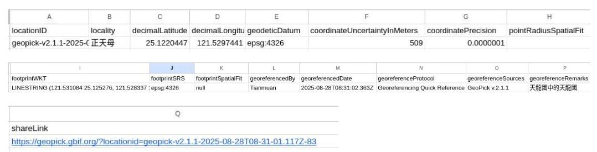

GeoPick - 自行定義地理區域範圍的好用工具
在生物多樣性資訊開放資料標準領域，關於地名、地理位置、精確度... 要用什麼格式描述與紀錄，有洋洋灑灑的一篇指引提供參考 Georeferencing Best Practices，但人生已經很難了，沒有好用的工具會更困難。於是有人寫了好用的服務讓這件事變的更簡單、更直覺，就是︰ Geopick。
間單的說只要4個步驟︰
- 選取已知或自行定義地理區域範圍
- 填寫誰定義的、備註
- 驗證 & 產出
就完成了。
詳細來說有兩種使用情境，第一種︰
直接使用已知或常用地名
這邊用「天母」這個含糊的地名來當例子，天母這個地名非正式行政區的名字，不同時期、不同背景，會有不同的範圍，導致有所謂的真正的天母、老天母、天母邊緣、不是天母(北投)，甚至有人開玩笑建商也有一個最廣的範圍定義...

先不管確切範圍，在界面上方的搜尋欄輸入: "天母"，就有下拉選單的資料，地名資料來自於OpenStreetMap的Nominatim，然後就有一個被標注在天母圓環的點位了 (這邊也不討論「真」天母圓環是那一個，那又是另一個故事了，這邊指的是天母東/西路跟中山北路，假日有市集的那個圓環)，然後填上georeferencedBy (誰填的) 這個欄位就自動產生 locality 地名欄位的資訊:
Nominatim: 天母, 士林區, 蘭雅, 臺北市, 11152, 臺灣
有趣的是這個工具沒有使用 DarwinCore常用的 country (國家)、stateProvince (省/州)、county (縣/市/郡)、municipality (地方行政區)... 這樣的欄位，大概是考慮各國系統太複雜了，本國人常常也不一定會完全理解 (隨便問一題，你知道台灣現在有那幾個城市是省轄市嗎)，總之這個locality就填寫完成了，前面還加上" Nominatim:"，交待了來源。
自行定義範圍與名稱
第二種，就是要自行命名一個我自己認定的範圍，也想給一個名稱，直接用地圖上的劃線工具把我要的區域框出來，然猴給locality(地點名稱)、georeferencedBy (誰填的) 跟georeferenceRemarks(說明備註)，就這樣。

然後他就自動產生可以盡可能詳細的放入DarwinCore欄位的資料，直接複製打包帶走，很方便。
示範內容如下圖:

至於這些詳細欄位內容的定義與使用就請移駕Darwin Core Quick Reference Guide - Darwin Core (Location Class)。
原始碼: rtdeb/GeoPick: Simple uncertainty radius calc for lines and polygons
真心感謝無私奉獻的Geopick、OpenStreetMap、Nominatim、ESRI World Imagery與GBIF ~